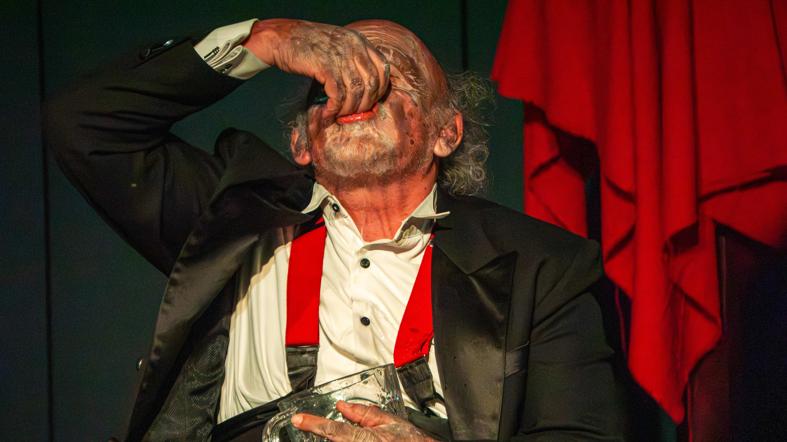
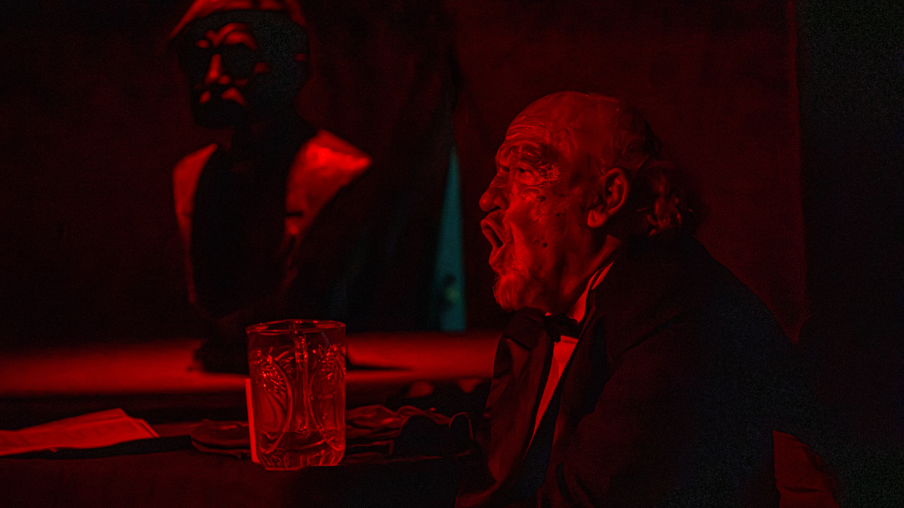
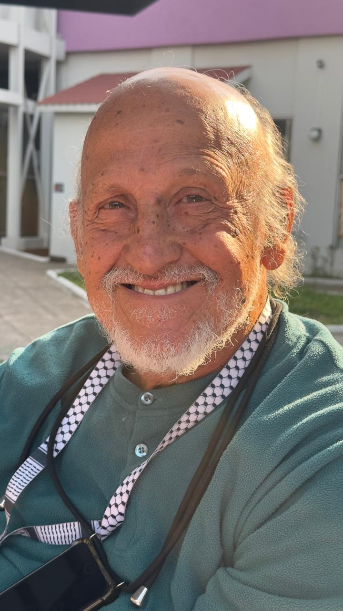

Una guía completa para prensa, programadores y editores sobre la obra, su historia y su intérprete.

Un simio capturado presenta ante una academia de científicos el informe de su transformación en hombre. Entre el humor negro y la reflexión existencial, Peter —el gorila— narra su proceso de "civilización" forzada: desde la captura hasta su adaptación al mundo humano. Humberto Dupeyron encarna este monólogo kafkiano que, tras 37 años ininterrumpidos en escena, se ha convertido en el más longevo de México: una indagación perturbadora sobre identidad, libertad y el precio de la asimilación.
Basada en el relato "Un informe para la Academia" de Franz Kafka, El Gorila es un monólogo que traspasa los límites del teatro convencional. Un simio humanizado —Peter el Rojo— comparece ante una academia de sabios para presentar el informe de su metamorfosis: cómo dejó de ser simio para volverse hombre.
El relato avanza entre el absurdo y lo brutal: la captura violenta, el encierro en una jaula estrecha a bordo de un barco, la decisión de imitar a sus captores como única vía de escape. No buscaba la libertad —imposible de recuperar—, sino una salida. Aprendió a beber, a fumar, a escupir. Aprendió a hablar. Se volvió humano no por convicción, sino por supervivencia.
Humberto Dupeyron encarna este personaje desde 1989, sosteniendo en escena uno de los textos más incómodos y lúcidos sobre la condición humana. El Gorila no ofrece respuestas sino una serie de interrogantes. ¿Qué significa civilizarse? ¿Cuánto de nosotros sacrificamos para pertenecer? ¿Acaso somos más libres que Peter?
El Gorila lleva 37 temporadas consecutivas en escena, posicionándose como el monólogo más longevo de México. Desde su estreno en 1989 en el Teatro Xola, la obra ha permanecido ininterrumpidamente en cartelera, acumulando más de mil funciones y varias generaciones.
El texto original —"Un informe para la Academia" (Ein Bericht für eine Akademie, 1917)— es uno de los relatos más célebres de Franz Kafka. La primera adaptación teatral fue realizada en 1968 por Alejandro Jodorowsky, quien confió la interpretación a Narciso Busquets. Años más tarde, Jodorowsky otorgó los derechos de representación a Humberto Dupeyron, quien desde entonces ha dedicado casi cuatro décadas a este personaje.
A lo largo de su trayectoria, El Gorila ha sido reconocida no solo por su vigencia temática, sino por la disciplina actoral que exige: un actor solo en escena durante 90 minutos, sosteniendo un texto denso, físicamente demandante y emocionalmente complejo.
La obra ha sido presentada en diversos foros de la Ciudad de México, así como en el interior de la república, en ciudades como Oaxaca, Chiapas, Puebla, Aguascalientes, Monterrey, Guadalajara, Morelia, Acapulco, Chihuahua, Querétaro, Veracruz, Tijuana, la Paz, Ensenada, los Cabos entre muchas ciudades más, y actualmente presentándose La Nueva Carpa Geodésica en San Ángel. Su permanencia en cartelera la ha consolidado como una referencia obligada del teatro contemporáneo en México.


Humberto Dupeyron es actor, director, escritor y pedagogo teatral con más de seis décadas de trayectoria. Nacido en la Ciudad de México, se formó en la academia de Andrés Soler.
Ha participado en cine, televisión y en más de 80 montajes teatrales, tanto en roles protagónicos como en ensambles, abarcando desde el teatro clásico y comedia, hasta la experimentación contemporánea. Entre sus trabajos más reconocidos se encuentran El Gorila, Los Malditos, La Dama de Negro, Mi Querido Profesor, Esta Noche Cena Pancho, Mañana Será Otro Día, Cuando el Pepino Falla, Hacemos de Tocho Morocho, Para Petacas las Mías, Las Hijas de Don Tomás, Nace una Estrella, Dulce Amor Mío. Como director, ha montado obras como Violación, Dos Parejas Disparejas.
Su compromiso con El Gorila representa no solo una hazaña actoral, sino una defensa del teatro como oficio de resistencia: 37 años sosteniendo el mismo personaje en escena, reinventándolo cada función, sin concesiones.
Franz Kafka es uno de los escritores más influyentes del siglo XX. Su obra —marcada por atmósferas opresivas, burocracias absurdas y protagonistas atrapados en situaciones incomprensibles— ha dado origen al término "kafkiano" para describir experiencias de alienación y desorientación existencial.
Aunque en vida publicó poco (relatos breves, principalmente), sus novelas El proceso, El castillo y La metamorfosis fueron editadas póstumamente y se convirtieron en pilares de la literatura moderna. "Un informe para la Academia" (1917), el relato que da origen a El Gorila, condensa muchas de sus obsesiones: la animalidad, la transformación forzada, la imposibilidad de retorno.
En 1989, cuando Humberto Dupeyron lo estrenó por primera vez, el mundo era otro. Hoy, 37 años después, las preguntas que plantea Peter el Rojo —el simio convertido en hombre— siguen sin respuesta.
¿Qué significa adaptarse? ¿Cuánto perdemos en el proceso de pertenecer? ¿Somos más libres que un gorila enjaulado que aprendió a imitar gestos humanos para sobrevivir? La obra no moraliza. No ofrece salidas. Presenta un espejo.
Esta temporada marca un nuevo capítulo en la historia de El Gorila. Tras décadas en diversos foros, la obra encuentra ahora su hogar en La Nueva Carpa Geodésica, un espacio diseñado para la intimidad y la experimentación. Los domingos a las 17:30 horas, el público se encuentra con Humberto Dupeyron —y con Peter el Rojo— en una experiencia teatral que no concede tregua.
La decisión de sostener este monólogo durante 37 años consecutivos no es solo una proeza actoral: es un acto de resistencia. En un contexto cultural que privilegia lo efímero y lo espectacular, El Gorila insiste en la permanencia, en la profundidad, en el valor de un texto que no busca complacer sino confrontar.
No es teatro fácil. No es entretenimiento. Es una cita con lo incómodo, con lo necesario, con la consciencia y el humor que caracteriza a Humberto Dupeyron. Y por eso sigue vivo.